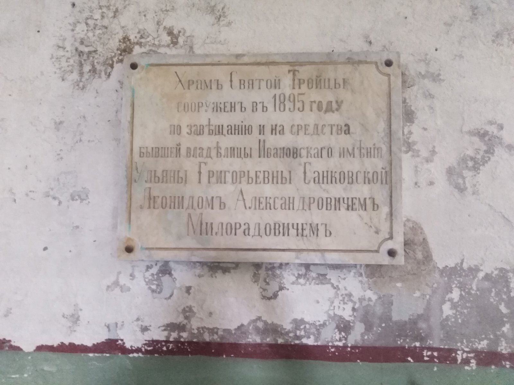
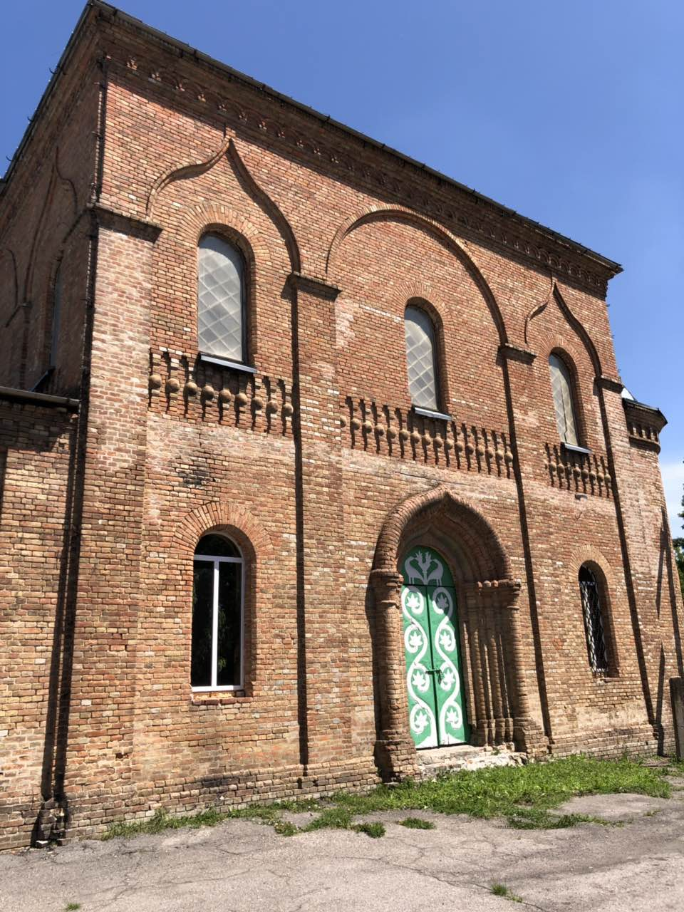
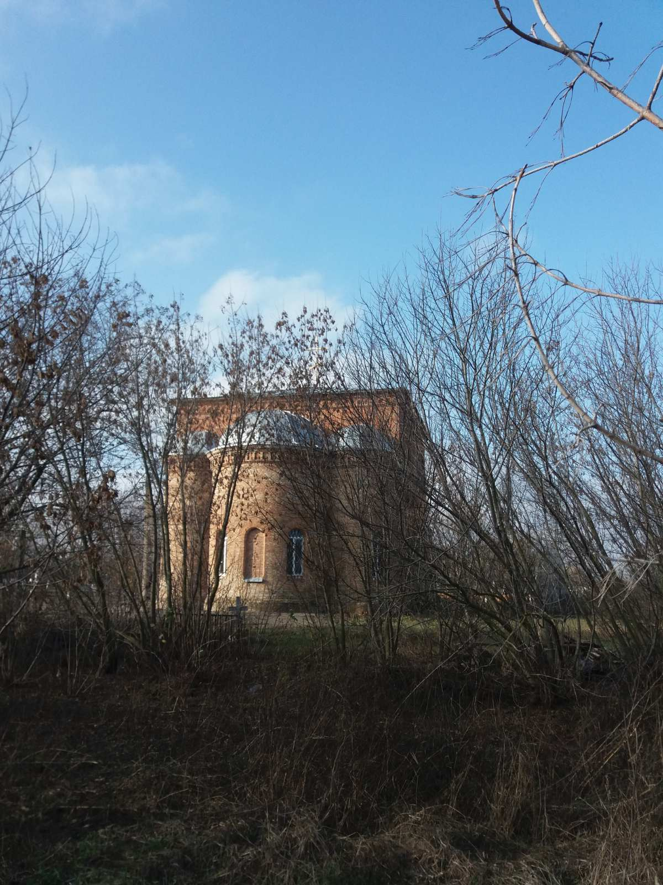

Храм Святой Троицы
Храм Святой Троицы
с.Иванивка Семёновского района Полтавской области
возрождаем Храм Святой Троицы всем миром
История Храма Святой Троицы
В ХVII веке на берегу реки Кривая Руда казаки основали село Ивановка. Оно и поныне стоит на нашей благодатней Полтавской земле. В 1895 году, в самом центре села, как и подобает, был возведён храм дивной красоты. Он характерный для русской архитектуры, которая следовала традициям, корни которых были установлены ещё в Византии. Однокупольный Храм Святой Троицы словно символически напоминает нам о единстве Бога. Купол-луковичка подобный пламени свечи. Он символизирует воплощение молитвы, стремящейся к небесам. Возведён храм был Леонидом Александровичем Милорадовичем. Построен по завещанию его тёти, бывшей владелицы Ивановского имения, Ульяны Григорьевны Санковской. Леонидом Александрович Милорадович был талантливым дипломатом, публицистом, губернатором. В усыпальнице этого храма он захоронен и поныне.
К сожалению, этот храм, как и многие, в ХХ веке претерпел варварское разрушение. Были снесены купол и кресты, уничтожены иконы и фрески. Длительное время Храм использовался как здание под склад. Но, по милости Божьей, сохранены стены в первозданной красоте и крепости. В прямом и переносном значении. Хотя, в каком переносном? В самом прямом значении. В красоте и крепости нашей православной веры! По благословению Владыки Николая, Архиепископа Кременчугского и Лубенского, настоятелем был назначен отец Иоанн. И вот, возобновились службы, возрождается церковная жизнь.
Дорогие Друзья
Если ваша душа наполнена верой и любовью, благодарностью к Богу- ПРОСИМ помощи. Давайте, всем миром, поможем отцу Иоанну в восстановлении этой святыни. Наступило то время, когда у нас есть возможность поблагодарить создателей храма за наследие. Пришло время снова устремить в Небо свой взор и купол-луковичку венчающий Крестом, во славу нашего Господа. Благодарим вас. Спаси всех Христос.
Свяжитесь с нами
с.Иванивка Семёновского района Полтавской области Храм Святой Троицы 1895 года.Настоятель храм отец Иоанн
+380974853776